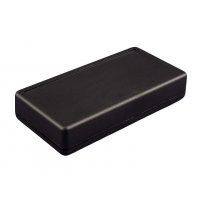

Project template containing the recommended board layout for Hammond Manufacturing 1599H:
Black: 1599RFIHBK - HM2084-ND
Gray: 1599HTSGY - HM4092-ND
Black: 1599HTSBK - HM883-ND
Gray: 1599HSTSGY - HM4091-ND
Gray: 1599HSGY - HM211-ND
Gray: 1599HGY - HM217-ND
Black: 1599HBK - HM214-ND
|  |
|
The "Dwgs.User" layer contains all critical dimmensions in milimeters[inches].
The "Edge.Cuts" layer contains the maximum board outline and holes to align with board standoffs.
PCB Preview: